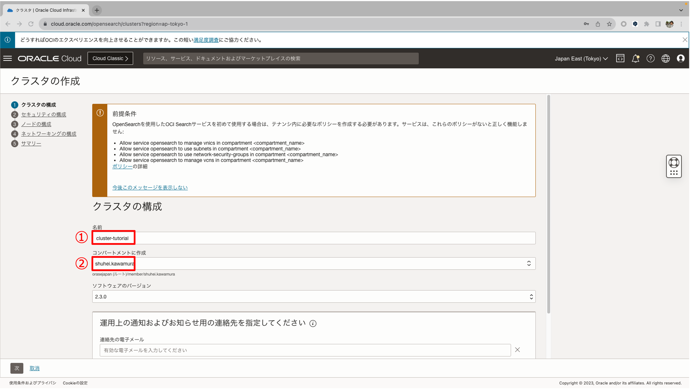

OCI Search Service for OpenSearch を使って検索アプリケーションを作成する
Oracle Cloud Infrastructure Search Service with OpenSearch は、OpenSearch に基づいてアプリケーション内検索ソリューションを構築するために使用できるマネージド・サービスであり、インフラストラクチャの管理に集中することなく、大規模なデータセットを検索し、結果をミリ秒で返すことができます。
ハンズオンの流れは以下となります。
- OpenSearch クラスターのプロビジョニング
- クラスタへの接続
- データセットのアップロード
- アプリケーションの作成とデプロイメント
- アプリケーションのテスト
前提条件
- クラウド環境
- Oracle Cloud のアカウントを取得済みであること
- OCI チュートリアル その 2 - クラウドに仮想ネットワーク(VCN)を作る を通じて仮想クラウド・ネットワーク(VCN)の作成が完了していること
- OCI チュートリアル その 3 - インスタンスを作成する を通じてコンピュートインスタンスの構築が完了していること
ハンズオン環境のイメージ
1. OpenSearch クラスターのプロビジョニング
OpenSearch クラスタは、OpenSearch 機能を提供するコンピュート・インスタンスのセットです。各インスタンスはクラスタ内のノードです。ノードのタイプは、インスタンスによって実行される機能およびタスクを決定するものです。各クラスタは、1 つ以上のデータ・ノード、マスター・ノードおよび OpenSearch ダッシュボード・ノードで構成されます。

OCI コンソールを使ってクラスターを作成します
ナビゲーション・メニューを開きます。「データベース」をクリックします。OpenSearch で、「クラスタ」をクリックします。
OpenSearch 一覧画面で「クラスタの作成」ボタンをクリックします。
クラスタの名前を指定し、クラスタを作成するコンパートメントを選択して、「次」をクリックします。

セキュリティの構成で、ユーザー名、パスワードを以下のように入力します。
- ユーザー名:
guest - パスワード:
Welcome#123
ノード最適化オプションで「開発」オプションを選択します。「次」をクリックします。
「ネットワーキングの構成」セクションで、既存の仮想クラウド・ネットワークを選択して、次の選択を行います。
- 仮想クラウド・ネットワーク: 前提条件で作成したクラウド・ネットワーク。
-
サブネット: 「既存のサブネットを選択」を選択して、サブネットは前提条件で作成したインスタンスと同じパブリックサブネットを指定します。
上記の選択をした後は、「次」をクリックします。
「サマリー」ページでクラスタ確認の詳細を確認し、「クラスタの作成」をクリックします。
2. クラスタへの接続
クラスタ接続情報を取得します
ナビゲーション・メニューを開きます。「データベース」をクリックします。OpenSearch で、「クラスタ」をクリックします。

「クラスタ」リストで、詳細を表示するクラスタの名前をクリックします。
「クラスタの詳細」ページで、下記の情報を取得します。
- API エンドポイント: クラスタのプライベート・エンドポイントの FQDN。
- プライベート IP: クラスタのプライベート・エンドポイントのプライベート IP アドレス。
- OpenSearch ダッシュボード API エンドポイント: クラスタの OpenSearch ダッシュボードの FQDN。
- OpenSearch ダッシュボード・プライベート IP: クラスタの OpenSearch ダッシュボードへの接続に使用できるプライベート・エンドポイントの IP アドレス。
セキュリティ・ルールを作成します
- ナビゲーション・メニューを開きます。「データベース」をクリックします。OpenSearch で、「クラスタ」をクリックします。
- 目的のクラスタをクリックします。
- 「クラスタの詳細」の「サブネット」で、サブネットの名前をクリックします。「サブネット詳細」ページが開きます。
「セキュリティ・リスト」で「デフォルト・セキュリティ・リスト」という名前のセキュリティ・リストをクリックします。
「イングレス・ルールの追加」をクリックします。
ルールの次の値を入力します:
- ステートレス: このチェックボックスは選択を解除したままにします。
- ソース・タイプ: CIDR
- ソース CIDR: 0.0.0.0/0
- IP プロトコル: TCP
- ソース・ポート範囲: すべて
- 宛先ポート範囲: 9200
- 説明: ルールのオプションの説明。
「別のイングレス・ルール」をクリックします。
ルールの次の値を入力します:
- ステートレス: このチェックボックスは選択を解除したままにします。
- ソース・タイプ: CIDR
- ソース CIDR: 0.0.0.0/0
- IP プロトコル: TCP
- ソース・ポート範囲: すべて
- 宛先ポート範囲: 5601
- 説明: ルールのオプションの説明。
「別のイングレス・ルール」をクリックします。
ルールの次の値を入力します:
- ステートレス: このチェックボックスは選択を解除したままにします。
- ソース・タイプ: CIDR
- ソース CIDR: 0.0.0.0/0
- IP プロトコル: TCP
- ソース・ポート範囲: すべて
- 宛先ポート範囲: 8080
- 説明: ルールのオプションの説明。
「イングレス・ルールの追加」をクリックします。
クラスタへの接続のテスト ローカル・マシンからVM インスタンスに接続したら、次のいずれかのコマンドを実行して接続をテストします。
curl -u guest:Wellcome#123 https://<cluster_API_endpoint>:9200
エンドポイントへの接続が成功すると、次のようなレスポンスが返されます:
{
"name" : "opensearch-master-0",
"cluster_name" : "<cluster_name>",
"cluster_uuid" : "<cluster_UUID>",
"version" : {
"distribution" : "opensearch",
"number" : "1.2.4-SNAPSHOT",
"build_type" : "tar",
"build_hash" : "<build_hash>",
"build_date" : "2022-02-08T16:44:39.596468Z",
"build_snapshot" : true,
"lucene_version" : "8.10.1",
"minimum_wire_compatibility_version" : "6.8.0",
"minimum_index_compatibility_version" : "6.0.0-beta1"
},
"tagline" : "The OpenSearch Project: https://opensearch.org/"
}
クラスタの OpenSearch ダッシュボードへの接続のテスト 01. ローカル・マシンから次のコマンドを実行します。
ssh -C -v -t -L 127.0.0.1:5601:<OpenSearch_Dashboards_private_IP>:5601 -L 127.0.0.1:9200:<OpenSearch_cluster_private_IP>:9200 opc@<VM_instance_public_IP> -i <private_key_file>
<OpenSearch_Dashboards_private_IP>を、クラスタの OpenSearch ダッシュボードのプライベート IP に置き換えます。<OpenSearch_cluster_private_IP>をクラスタのプライベート IP に置き換えます。 <VM_instance_public_IP>を VM インスタンスのパブリック IP アドレスに置き換えます。<private_key_file>を、インスタンスへの接続に使用する秘密キーへのパスに置き換えます。これらの値とその検索方法の詳細は、インスタンスへの接続を参照してください。
-
ローカル・マシンの Hosts ファイルに下記内容を追加します。
127.0.0.1 <cluster_API_endpoint> <cluster_Dashboard_endpoint>-
ローカル・マシンが Mac の場合、Hosts ファイルの位置は
/etc/hostsです。Hosts ファイルを更新した後は、下記のコマンドを実行してローカル DNS を更新します。sudo killall -HUP mDNSResponder -
ローカル・マシンが Windows の場合、Hosts ファイルの位置は
C\Windows\System32\drivers\etc\hostsです。
-
-
ローカル・マシンのブラウザから、
https://<cluster_Dashboard_endpoint>:5601を開いて OpenSearch ダッシュボードにアクセスします。
作成したユーザー名、パスワードを入力します。
3. データセットのアップロード
OpenSearch ダッシュボードを使ってデータセットをアップロードします。
ナビゲーション・メニューを開きます。Dev Tools をクリックします。
Dev Tools で accounts.json の内容を Console にペーストします。
実行ボタンをクリックします。
Console に下記の DSL を実行して、データセットを検索してみます。
GET accounts/_search
{
"query": {
"match": {
"firstname": "Amber"
}
}
}

4. アプリケーションの作成とデプロイメント
アプリケーションの作成
Helidon MPとOpenSearch の Java high-level REST clientを使って上記データセットを検索するアプリケーションを作成します。
// ...
@Path("/accounts")
@RequestScoped
public class AccountResource {
private String openSearchEndpoint;
private final CredentialsProvider credentialsProvider;
@Inject
public AccountResource(@ConfigProperty(name = "oci.opensearch.api.endpoint") String openSearchEndpoint,
@ConfigProperty(name = "oci.opensearch.credential.username") String username,
@ConfigProperty(name = "oci.opensearch.credential.password") String password) {
this.openSearchEndpoint = openSearchEndpoint;
credentialsProvider = new BasicCredentialsProvider();
credentialsProvider.setCredentials(AuthScope.ANY,
new UsernamePasswordCredentials(username, password));
}
@Path("/search/{inputTerm}")
@GET
@Produces(MediaType.APPLICATION_JSON)
public Response search(@PathParam("inputTerm") String inputTerm) {
// Create a client.
RestClientBuilder builder = RestClient.builder(HttpHost.create(openSearchEndpoint))
.setHttpClientConfigCallback(new HttpClientConfigCallback() {
@Override
public HttpAsyncClientBuilder customizeHttpClient(HttpAsyncClientBuilder httpClientBuilder) {
return httpClientBuilder.setDefaultCredentialsProvider(credentialsProvider);
}
});
try (RestHighLevelClient client = new RestHighLevelClient(builder)) {
// Build search request
SearchRequest searchRequest = new SearchRequest("accounts");
// Build SearchSource
SearchSourceBuilder searchSourceBuilder = new SearchSourceBuilder();
searchSourceBuilder.query(QueryBuilders.queryStringQuery(inputTerm));
searchSourceBuilder.from(0);
searchSourceBuilder.size(100);
searchRequest.source(searchSourceBuilder);
// Search
SearchResponse searchResponse = client.search(searchRequest, RequestOptions.DEFAULT);
return Response.status(Response.Status.OK).entity(searchResponse.toString()).build();
} catch (IOException e) {
return Response.status(Response.Status.INTERNAL_SERVER_ERROR).build();
}
}
}
Bootstrapを使ってアプリケーションの画面を作成します。
<div class="container">
<div class="row height d-flex justify-content-center align-items-center">
<div class="col-md-6">
<div class="form">
<i class="fa fa-search"></i>
<input
type="text"
class="form-control form-input"
onkeydown="search(this)"
placeholder="Search accounts..."
/>
</div>
</div>
<div id="accounts_container" class="col-md-10" style="height:85%"></div>
</div>
</div>
上記で作成したアプリケーションはこちらをご参照ください。
アプリケーションのデプロイメント
-
ローカル・マシンから VM インスタンスに接続します。
-
下記のコマンドを実行して、ファイアウォールにポート「8080」を追加します。
sudo firewall-cmd --zone=public --add-port=8080/tcp --permanent sudo firewall-cmd --reload -
下記のコマンドを実行して、git と docker をインストールします。
sudo yum install git sudo yum install docker -
下記のコマンドを実行して、作成したアプリケーションをクローンします。
git clone https://github.com/oracle-japan/OCI_OpenSearch_Handson_App.git -
アプリケーションの Docker イメージを作成します。
cd OCI_OpenSearch_Handson_App docker build . -t os_app -
下記のコマンドを実行して、アプリケーションをデプロイします。
nohup docker run -p 8080:8080 -e="OPENSEARCH_ENDPOINT=<cluster_API_endpoint>" localhost/os_app &
<cluster_API_endpoint>を、クラスタの OpenSearch ダッシュボードの API エンドポイントに置き換えます。
5. アプリケーションのテスト
ローカル・マシンのブラウザから、下記のリンクを開いてアプリケーションにアクセスします。
http://<VM_instance_public_IP>:8080
<VM_instance_public_IP>を VM インスタンスのパブリック IP アドレスに置き換えます。
検索枠に検索条件を入力して、キーボードの Enter キーを押します。
関連するアカウント情報が表示されます。